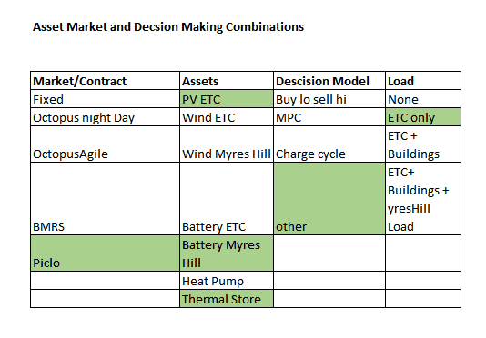

Project Description
SIES 2022 ERA-Learn is a learning by doing project, that was developed to support transition to a decentralised multi-sector and multi-energy vector, low CO2 Smart Integrated Energy System (SIES) by development of a Digital Energy Utility Management Service (DEUMS). DEUMS will provide solutions and establish routes-to-market for need-owners and businesses. An existing digital Virtual Power Plant (VPP) platform has been adapted into an Enhanced Virtual Power Plant (VPP+) development, demonstration, and test centre (SIES2022 Centre) capable of managing the interface between local and regional energy systems and markets. SIES2022 will develop and demonstrate: need-owner engagement, business and technical processes for VPP+ deployment; trading and technical algorithms; cross-sector applications; a Powershift module; and modelling to support optimum design of future systems. Outputs are shared through a solution-library available here...... .
Virtual Power Plants (VPP) will form an important element in the development of a future low carbon power market, as they will ease the interactions of system operators
with thousands of potential customers. Exactly how these sources of flexibility will be managed and the economic impact on the players is still unclear.
The challenge of employing flexibility in generation, consumption and storage in the context of a VPP depends on the appropriate optimization
of market access, assets and an understanding of the constraints on the wider distribution system. The Engineering Technology Centre in Central Scotland (ETC)
is a partner in the SIES 2022 ERA-Net consortium which has been set up to deliver a technology demonstrator system to manage energy pools using VPP software and
to investigate how this VPP could operate using a variety of assets in a realistic setting.
ETC has interests in two energy pools which are available for immediate deployment in the project:
- ETC's own premises and the wider Scottish Enterprise Technology Park energy infrastructure
- A test area at the Myres Hill wind turbine site.
The sites include both electrical and thermal loads that can be used for flexibility as well as other consumers in the area. Future DSO/TSO flexibility markets will require the efficient operation of aggregators to ensure the safe and economic operation of the system. An important element of this will be the ability to forecast imbalance volumes and market prices. Although forecasting of wholesale day ahead prices is well documented and reasonably accurate, the same cannot be said of flexibility markets. Initial work suggests that forecasting flexibility prices accurately, will be difficult. In addition, those markets are still actively evolving so historical data to train such models is lacking. Using the pilot demonstrator plant introduced above, the effect on the operation of the VPP at this site is shown using different forecasting methodologies, both from a technical and economic point of view. It will be shown that the inaccuracies in the forecast methodologies presents challenges to VPP operations, but with appropriate risk management techniques, these effects can be minimized.
Selecting Asset, Market and Decision Mode Combinations
VPP owners/developers will need to purchase/contract with assets/asset owners and provide the flexibility that these assets supply with a route to market. In addition owners will need to decide on how to schedule such assets by reviewing forecasts of prices, power outputs and load conditions (heat and power). In essence, the VPP operator has a decision method to chose. For example they could use some simple rule or logic or use Model Predictve Control (MPC - Look ahead Optimisation) or some other method. In the case of the Demonstrator plant at ETC, they have a choice of assets to chose from. Figure 1 shows the potential choices that the ETC demonstrator plant might have in operating the VPP at this location (see below).

How does the SIES VPP work?
In simple terms the VPP performs the following functions:
- Uses an Event Scheduler to kick off a set of VPP actions and routines. Currently every half hour.
- Uses a VPP agent or piece of software that follws a script defined by the developer. In essence this script does the following things
- Communicates with Assets/Markets/Weather Apps and retrieves appropriate data. This data is stored in-memory for immediate use and in long term storage for use in later analysis.
- Forecasts Power output, Loads use,and market prices based on data stored in memory using a variety of algorithms.
- Decison Making: Uses the various forecasts to make decisions about asset dispatch. Eg renewables output to grid for export or to the battery or to the load.
- Sends Control signals:. Sends control signal to assets to tell them what to do in the next half hour and beyond
- Performs other functions such as error capturing and reporting.